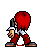
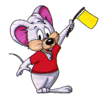

Ejercicio 3.4
Mis GIF ANIMADOS favoritos
Este es un gato de una página de gifs animados. si quieres bajar a tu PC algunos GIF animados,
coloca el puntero sobre la imagen, luego haces click con el botón derecho del ratón y finalmente haces clic en
Guardar imagen como...

Este se rie de ti
